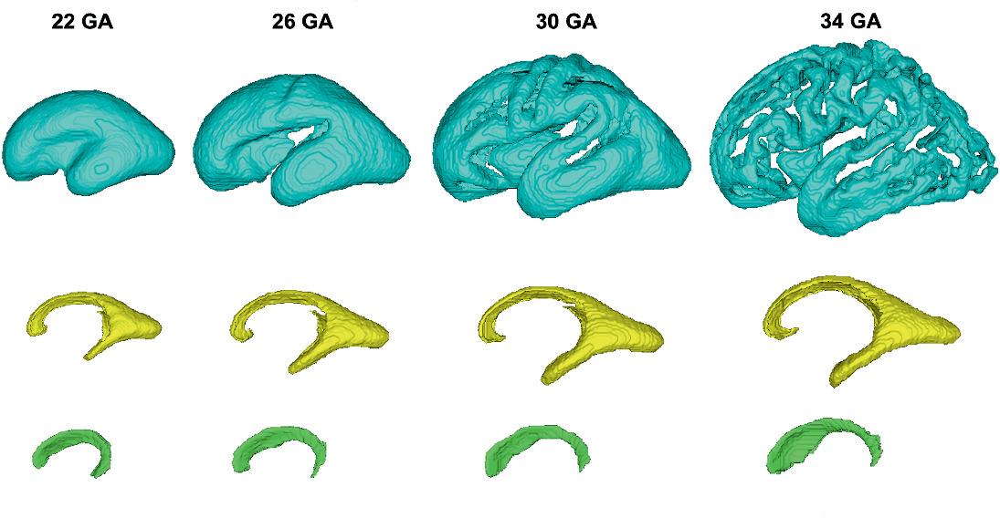

PUBLICATIONS
Effect of schizophrenia common variants on infant brain volumes: cross-sectional study in 207 term neonates in developing Human Connectome Project
Hai Le et al., 2023
 Translational Psychiatry
Translational Psychiatry
Quantitative T2 Relaxometry in Fetal Brain: Validation Using Modified FaBiaN Fetal Brain MRI Simulator
Suryava Bhattacharya et al., 2023
PIPPI, LNCS, Springer
Multi-task learning for joint weakly-supervised segmentation and aortic arch anomaly classification in fetal cardiac MRI
Paula Ramirez Gilliland et al., 2023
MELBA
A Deep Learning Approach for Segmenting the Subplate and Proliferative Zones in Fetal Brain MRI
Helena Sousa et al., 2023

Springer
Automated Multi-class Fetal Cardiac Vessel Segmentation in Aortic Arch Anomalies Using T2-Weighted 3D Fetal MRI
Paula Ramirez Gilliland et al., 2022
 Springer
Springer
Higher Order Spherical Harmonics Reconstruction of Fetal Diffusion MRI With Intensity Correction
Maria Deprez et al., 2020
IEEE TMI
Deformable Slice-to-Volume Registration for Motion Correction of Fetal Body and Placenta MRI
Alena Uus et al., 2020
IEEE TMI
Distortion Correction in Fetal EPI Using Non-Rigid Registration With a Laplacian Constraint
Maria Deprez et al., 2018
IEEE TMI
BOOKS
Machine Learning for Biomedical Applications: with Scikit-Learn and Pytorch
Maria Deprez and Emma C. Robinson, 2022
 Elsevier
Elsevier